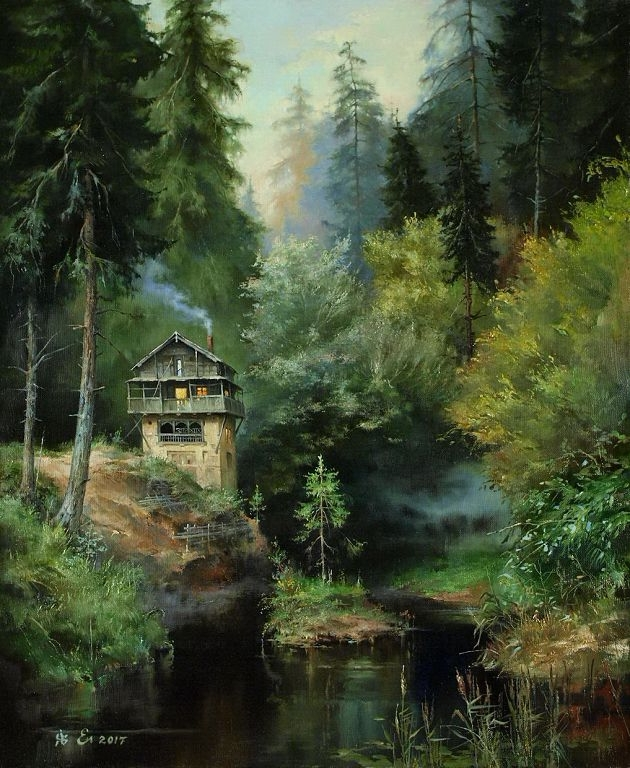
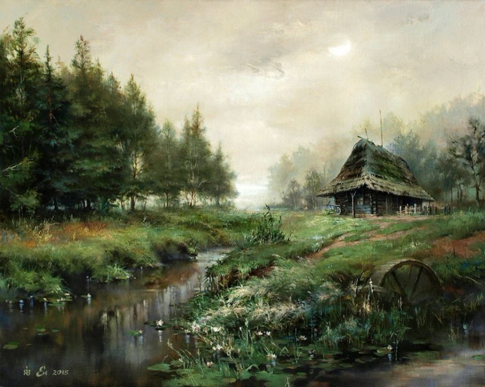
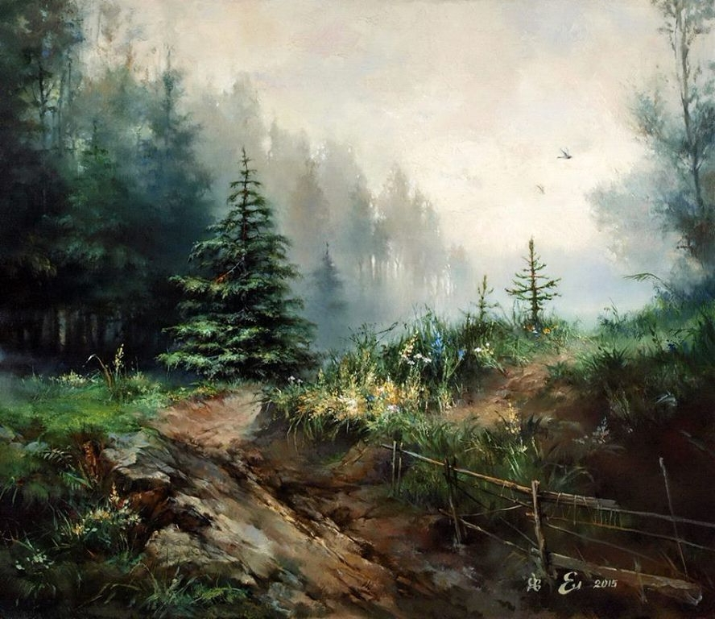
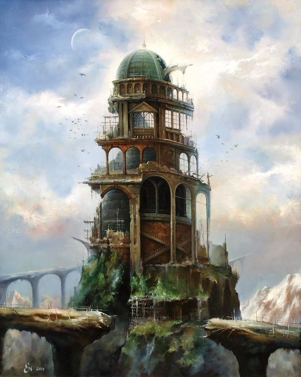
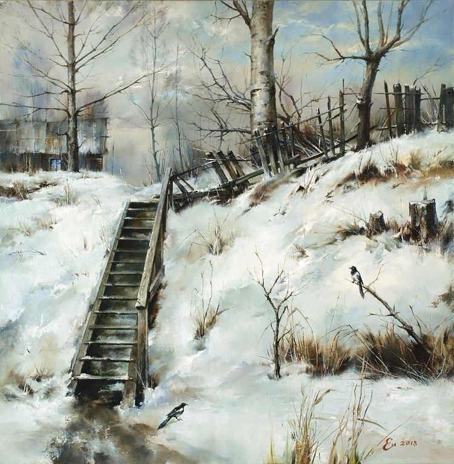
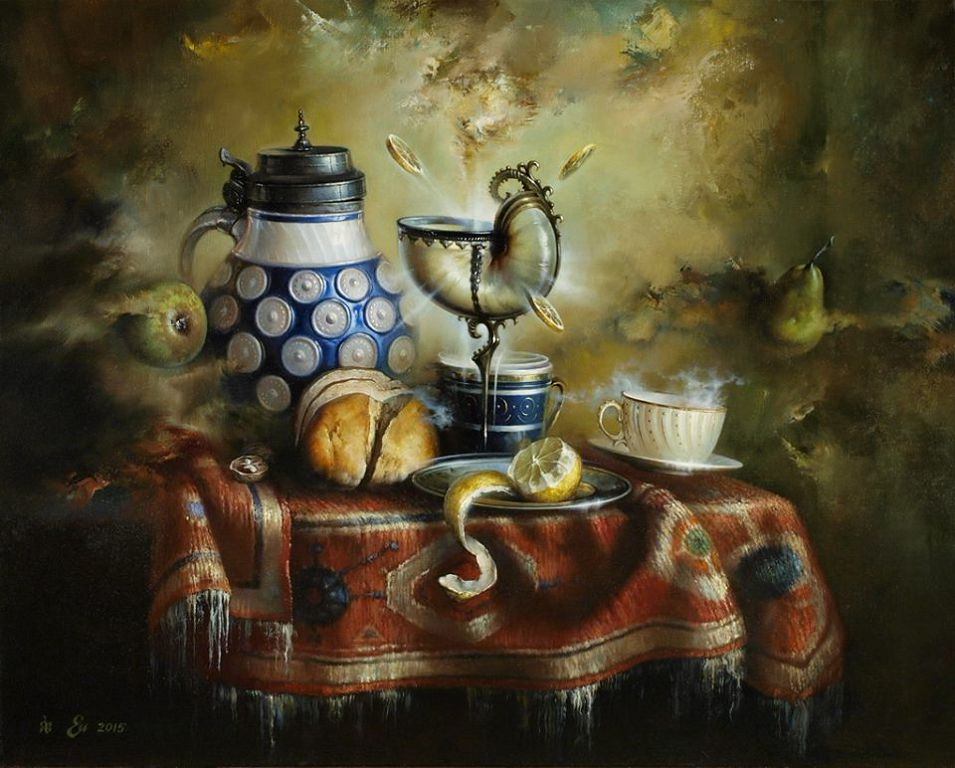

мои картины
Дом в лесу, 2017
Сентябрь.Полдень, 2015
Лесная тропинка, 2015
мои картины
Башня, 2011
Две сороки, 2013
Натюрморт с кубком, 2015
Егоров Игорь Валентинович родился в г. Гомеле в семье художников в 1964 г. 1975-1979 – Учился в художественной школе в Гомеле, Беларусь 1979-1983 – Учился в Минском Художественном Училище им. А.К.Глебова, Беларусь 1986-1991 – Учился в Беларусской Академии Искусств в Минске, Беларусь С 1980 года участвует в художественных выставках. Член Белорусского союза художников (секция живописи) с 1997 года. Участие в выставка (избранное): 1980 – Персональная выставка в Ветке, Беларусь 1991 – Участник выставки Беларуской Академии Искусств в Минске во Дворце Искусств, Беларусь 1992 – Персональная выставка в Субботице, Сербия (Югославия) 1994 – Персональная выставка в Минске, Беларусь 1995 – Лауреат «White Art Festival» проходившей под эгидой ООН во Дворце Искусств в Минске, Беларусь 1996 – Участник выставки «Kunst Aus Weißrusland» в Штутгарте, Германия 1998 – Участник юбилейной республиканской выставки Белорусского союза художников «Панорама искусства» во Дворце Искусств в Минске, организованной Министерством культуры Республики Беларусь 2003 – Участник «Gala of Angels Art Auction» в Портланде, Орегон, США 2004 – Участник республиканской выставки Белорусского союза художников «Осень» во Дворце Искусств в Минске, Беларусь 2006 – Участник «Gala of Angels Art Auction» в Портланде, Орегон, США 2008 – Участник выставки "Natascha's Tanz - mit der weißrusussischen Seele des Marc Chagall" в галерее Эйнхорн в Кронберге, Германия 2009 – Участник выставки "...nach Marc Chagall...Meisterwerke zeitgenössischer Kunst aus Belarus" в галерее "Хеллхоф" в Кронберге, Германия 2010 – Участник республиканской выставки Белорусского союза художников "Краявид" во Дворце Искусств в Минске, Беларусь 2010 – Участник выставки "Очарованные жизнью". Егоровы. Семья художников." во дворце Румянцевых и Паскевичей в Гомеле, Беларусь 2010 – Персональная выставка "Nordantique", организованная галереей "Бела-Александра", Гамбург, Германия 2011 – Участник выставки "Nordantique", организованной галереей "Бела-Александра", Гамбург, Германия
© Авторские права защищены